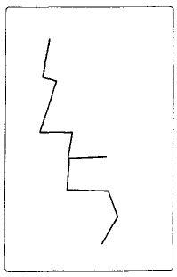
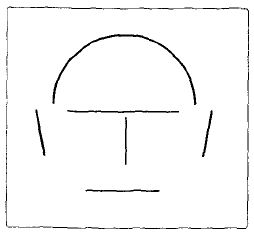

Беседа 2593 от 3877 · Беинса Дуно
Хигиена на сетивата
„Отче наш“
Чете се темата: „Геометрическата зависимост между правите и криви линии“.
При какви условия са се образували правите и криви линии, тъй както сега съществуват? Ако проучвате медицината, при какви условия са се образували сегашните лекарства? Или пък при какви условия са се явили сегашните ваши възгледи?
Как бихте определили един сладък предмет? Той спада към сетивото на вкуса, нали? Казвате: „Това е сладко, това е горчиво“. Всичко отнасяте към едно от петте сетива. Някой път ви е приятно едно усещане на обонянието. По какво се отличава обонянието от вкуса? Има нещо особено, което действа на вашето обоняние. Звукът действа на вашия слух. От звуците, които се докосват до вашето ухо, някои ви са приятни, а някои – неприятни. Има неща, които са приятни за очите, а други са неприятни. По какво се отличава градацията на тия сетива? Идваме до най-низшето сетиво, което е осезанието. Някои неща при него са приятни, а други не са – например, едни тела са гладки, а други са ръбести.
Сега, по какво се отличава човешката мисъл? И в нейния състав влизат чувствата. Казва се „права мисъл“. Следователно в мисълта си трябва да имаш едно чувство, т. е. да чувстваш в какво седи правата мисъл. Геометрическа ли е правата и кривата мисъл? Когато кажем: „Право мисли този човек“, това права линия ли е? Или когато кажем: „Криво мисли този човек“, крива линия ли е?
Това е красивото мислене – да имате ясна представа. Вие казвате: „Аз чувствам“. Това, което чувствате, какво отношение има към петте сетива? С какво чувствуваш и схващаш? С мисълта си схващаме, със сърцето си чувстваме. Как чувстваме със сърцето, на кое място чувстваме? Казвам: всичките пет сетива са в зависимост от силите на сърцето, т. е. сърцето има силови полета. Не мислете, че сърцето е глупаво, то представлява един по-нисш живот в по-гъста материя. Няма да спорим с учените. Чудновати са тези хора – някои от тях изчислили, че гъстотата на Сириус била тридесет и пет милиона пъти по-гъста от водата. Следователно, един килограм от материята на Сириус ще тежи на Земята тридесет и пет милиона килограма, а наши тридесет и пет милиона килограма там ще тежат един килограм. През такова огромно пространство как са направени тези изчисления, как е намерена такава гъстотата? Друг учен пък твърди, че намерил звезда, материята на която била толкова рядка, че един милион килограма от Земята там ще тежат едва един килограм. Можете ли сега да си представите колко рядка е тази материя? Добре, ако вземем тия два факта, каква полза ще извадите от знанието, че гъстотата на Сириус била тридесети пет милиона пъти по-гъста от водата, пък гъстотата на другата звезда била един милион пъти по-рядка? И астролозите са чудни. Астрологът казва, че Сириус има влияние върху човека. Когато попаднеш под неговото влияние, гъстотата му ще започне да се пренася в теб, ще чувстваш, че един килограм тежи много повече, няма да можеш да си намериш място, няма да знаеш къде да застанеш. Разбира се, ако привлечеш един килограм от Сириус, ти няма да знаеш какво да правиш. Ако пък дойдеш под влиянието на другата звезда, на която материята е един милион пъти по-рядка от тази на Земята, тогава в друго чудо ще се намерите – твоята телесна материя ще се разреди толкова, че няма да можеш да седиш на Земята. Затова казвам: измени влиянието им.
Казват, че повечето от нас са били някога на Сатурн. Добре, ама тази теория не е в съгласие със сегашните. Защо пък да сме били на Сатурн? Ами че нали астролозите считат Слънцето за планета. Тогава пък ще кажат, че най-първо сме били на Слънцето, после на Сатурн, после сме слезли на Луната и оттам – на Земята. Значи, тази теория не може да се приеме. Върху сегашните теории не можем да базираме астрологията, друга някоя теория трябва да се създаде. Откъде-накъде твърдят, че Сатурн или Марс влияят? Например казват за някого: „Той е марсианец“. Не, трябва съвсем друга теория. Всеки един трябва да се ползва от дадена теория.
Сега, вие всички имате нужда от медицина. Все пак, трябва да знаете кои треви действуват слабително, например. Или имате главоболие – съществуват някои растения, които могат да ви помогнат. Боли ви главата, но не знаете причината. Причината за главоболието е стомахът. Щом те боли главата, няма да търсиш да лекуваш нея, а ще лекуваш стомаха. Щом пък те заболи корема, причината е в главата. Заболи ли те стомаха, ще лекуваш главата. Тази теория не е в съгласие със сегашната медицина. Аз искам да ви наведа на тези мисли, защото сега има много възгледи и редица теории.
Сега, вие имате един възглед, според който искате да знаете много, искате да бъдете щастливи. Някой казва: „Щастлив искам да бъда, да имам добри условия“. В какво седи щастието на човека, в какво седят добрите условия? Трябва научно да търсите нещата. Има неща, които знаете научно. Например, казвате, че 2 по 2 е равно на 4. Това е една аксиома. Защо 2 по 2 е равно на 4 и 2 плюс 2 е пак равно на 4? Тогава защо 5 по 5 е равно на 25, а 5 плюс 5 не е равно на 25? Как ще примирите тези различия, защо е това изключение? Да оставим този въпрос...
Сега, да вземем две деца. Едното дете въз основа на своето сърце, на своите чувства щом погледне някоя ябълка, в него се явява мисъл да я опита, да направи научно изследване с нея. Отива при градината, но градинарят я е заобиколил с плет, не му дава възможност да прави своите научни изследвания. Детето цял ден стои около плета и мисли. Да допуснем, че един ден градинарят е заспал, детето влиза и взема няколко ябълки. Но градинарят е учен човек, знае всяко дърво колко плода има, вижда, че липсват два, но по какъв начин са изчезнали не знае. Той е видял, че едно дете се е мяркало покрай плета и започва да предполага, че то е взело ябълките. А детето взема плодовете, изяжда ги и разправя на своите другари: „Отлични са тия ябълки, много са сладки!“ Отиват и другите деца, но градинарят е търговец, който продава ябълките, и не е съгласен, че детето е взело, без да си е платило. Нека сега да турим цена на ябълките – например, хубавите да струват двадесет и пет лева. Това дете е взело две ябълки и ако всяка ябълка тежи по половин килограм, двете правят един килограм, който струва двадесет и пет лева. Защо градинарят си търси ябълките? Той търси двадесет и пет лева, понеже за двадесет и пет златни лева се купува един чифт обуща. Един златен лев струва тридесет и пет лева. Следователно двадесет и пет по тридесет и пет е равно на деветстотин лева. Кое е подбудило детето да вземе ябълките? Най-първо, то иска да ги вкуси. Ако бяха горчиви, детето щеше ли да ги вземе?
Когато помиришете едно цвете, вие се възхищавате от неговото ухание. Когато слушате някой оратор, вие се вдъхновявате от неговия говор. Той така е съчинил изреченията, така е наредил глаголите, прилагателните, съюзите, местоименията, съществителните, че събужда във вас интерес да го слушате. Също и когато някой цигулар поставя пръсти по струните, от тях излизат тонове и теб ти е приятно да слушаш. Щом някой път вземе неправилен тон, не ти е приятно и го коригираш. Значи, ти усещаш, че цигуларят не е турил някой пръст на място или че ораторът не е турил съществителното на място. Къде трябва да се тури съществителното и всъщност коя е най-важната част на речта? – Глаголът. Глаголът не е основа на речта. Съюзът е най-старото, с което човек е започнал, а след туй е дошъл глаголът. Съюзът е баща на глагола. Например, ти казваш „и“. На български „и“ е съюз, а на турски „и“ е наречие и значи „хубаво“. Защо „и“ в български е съюз, а в турски е наречие? Тук нещата са случайни. Но в Природата няма случайни работи, а има един закон, който определя противоречията. На френски език, например, имаме „о“, което значи вода; и на български имаме „о“, но в случая се разбира само една буква.
И така, каква роля играят сетивата в човека? Човек трябва да има правилни усещания. Ако твоят вкус е правилен, при ядене той ще внесе известни елементи в твоята мисъл. Много работи в света са минали през вкуса, много работи са минали през обонянието, много елементи ще минат през слуха, много ще минат през твоето око и много ще минат през твоите пръсти. Затова казвам: трябва да държиш ръцете си изправно – да ги миеш, да бъдат чисти. Ако не държиш ръцете си чисти, през тях ще минат някои елементи, които могат да ти причинят малка вреда и болка. На това основание е създадена хигиената. Човек има в тялото си седем милиона прозорци и трябва да ги чисти. Това са порите по неговата кожа. Вчера една сестра очисти прозорците в салона. А ние седем милиона прозорци трябва да чистим. Как става това? С вода трябва да ги чистим. През всички тези прозорци на тялото клетките дишат. Ако умиеш прозорците, т. е. ако всички пори са отворени, ти ще бъдеш здрав. Щом се затворят десет, петнадесет, сто, хиляда, две хиляди, един милион прозорци в твоята къща, твоето физическо състояние ще се измени. Та, най-първо дръжте тялото си чисто – измийте всичките си прозорци. Все пак, поне веднъж в седмицата трябва да измивате тия седем милиона прозорци. Хванете някой да ги измие, платете му – затова са направени баните. Идете на баня най-малко един път в седмицата, за да отворите прозорците. Ако нямахте никакъв прозорец на тялото, нямаше да имате нужда от никаква баня, но сега сте задължени да платите. Колко струва най-малко? Осем лева. Но ако вземете по-аристократическа баня, ще платите петнадесет, осемнадесет, двадесет лева. Ние сме пренебрегнали ония съществени здравословни неща.
Сега, ти можеш да видиш в какво състояние се намира твоето осезание, ако пръстите ти са чувствителни. Човек не трябва да изгубва чувствителността на пръстите, на кожата или на лицето. Особено тази чувствителност на пипането не трябва да се изгубва. Ако се изгуби, това е лош признак. Не трябва да губиш също и своя вкус. На някои вкусът е по-силен и те, например, турят в чая си една бучка захар и им е сладко. Други турят две, три бучки и пак не им е сладко и казват: „Аз много обичам сладко“. Не че обичаш сладко, но твоят вкус е притъпен. И после, това не е икономично – достатъчна ти е една бучка захар. Икономията е естествено положение.
Сега, някой път обонянието не е добре развито или слухът, или зрението не са добре развити. Питам тогава: ако твоите пет сетива не са хармонични, мислиш ли, че ще може да успяваш? Те са проводници на известни енергии, които трябва да преминат. Тия енергии най-първо ще минат през сърцето и тогава то ще започне да сортира тия особени чувства. След това умът ще започне да сортира елементите, които са влезли през петте сетива, минали са през сърцето и оттам са дошли до него. После ти от понятията на ума ще си съставиш една програма – как да постъпваш в света, в който живееш.
Сега, много учени хора говорят за подмладяването. И ние някой път говорим за подмладяването като идея. Как става подмладяването? Аз мога да ви покажа, но подмладяването не е така лесна работа. Най-първо трябва да подмладиш осезанието си, след туй трябва да подмладиш вкуса си, трябва да подмладиш обонянието си, трябва да подмладиш слуха си и трябва да подмладиш зрението си. После ще подмладиш сърцето си, ще подмладиш ума си и ще станеш нов. Много интересна работа е подмладяването.
Например, сега осезанието на пръстите ви е притъпено и казвате: „Като умра и ида на другия свят, ще се подмладя“. Вие умирали ли сте, за да знаете, че така ще бъде? Откъде знаеш, че като умреш, ще се подмладиш? Не сте правили опити. Сега казвате, че имало духове. За духовете има спор, понеже те живеят в свят на по-рядка материя и следователно не се занимават с грубата материя, с която на физическия свят се занимават. С други думи, техните понятия за нещата са малко по-други и туй, което нас ни интересува, тях не ги интересува. Допуснете, че един човек е гладен – в този момент него го интересува езика му, т. е. гладът се обосновава на вкуса. После гледате един господин, който се интересува от цветята – ходи, поглежда едно цвете, туря носа си и щом хареса мириса му, взема го и се закичва или на лявата, или на дясната страна. Защо туря цветето на лявата страна? – Да е близо до сърцето. Защо го туря на дясната страна? – За работа или, както се казва, за ума. Когато го тури на лявата страна, е по-идеално, а на дясната страна е по-практично. Нали българите турят за кума и за кумицата – на лявата страна е за кумицата, а на дясната е за кума. Ние казваме: за днес и за утрешния ден. „За кума“ е за днешния ден, а „за кумицата“ е за бъдещия ден. Сега ние разглеждаме нещата за кума.
И така, искам да ви обърна внимание каква важна роля играят човешките сетива. Понеже са области, през които известни сили, известна материя минава и ви дават материал за градеж. Ако не сте внимателни със сетивата си, с онова, което минава през вашето осезание, през вашия вкус, обоняние, слух и зрение, тогава ще дойдете до едно противоречие в Живота. По някой път ви е мъчно, криво ви е – пуснали сте в себе си нещо неестествено. Трябва да знаете произхода му. На какво се дължи вашата мъчнотия? Яли сте храна, която не е била добре сготвена, и ви става мъчно. От яденето много пъти на човек му става криво.
Сега, понякога животът на един ученик се обезсмисля – той не е разположен, не му се учи. Откъде е дошло това неразположение, че не иска да учи? – Защото професорът му казал, че е неспособен, че е простак, че си губи тук времето и че от него нищо няма да излезе. И ученикът започва да си повтаря тези думи. Не, ти трябва да знаеш как да отговориш на професора, а не да страдаш. Ако аз съм студент, ще кажа на професора: „Господин професоре, ти си млад и при това си учен – професор; аз съм прост, но вярвам, че като ми говориш, говориш, ти ще ме научиш и аз ще стана учен като теб. Ще ме извиниш, сега съм прост, слухът ми не е развит“. Професорът има развито ухо и понеже аз не мога да разбирам, той ще ме научи, като ми говори. Например, той развива някаква задача, казва ми така: А + В = АВ. Това е вярно само в случая, когато А и В са равни на 2. Щом те не са равни на 2, равенството не е вярно. Вие казвате: „Аз чух нещо“. И аз чух, че А + В = АВ. Значи, между мен и професора има различие в сетивата – моят слух е по-грубичък, сливам тоновете. Така е и при музикантите – има някои, които веднага различават тоновете; има други музиканти, на които тоновете не им са ясни.
Казвам: мисълта е едно изящно чувство. Тя се ръководи от едно крайно фино, изящно чувство, което определя качествата на всеки елемент на мисълта. Това е правата мисъл. В правата мисъл всяко нещо е турено на своето място.

Да допуснем сега, че в изкуството имате една единица, втора единица, трета единица, четвърта, пета, шеста, седма, осма, девета и десета. (Учителя рисува човешки профил с прави линии). Но ако това, което рисувам сега, го покажа на един художник, той ще намери, че липсват много неща от изкуството. Ако един художник дойде да рисува, той ще замени правите линии с криви и ще знае как да съпостави правите и кривите линии. На тази рисунка липсва нещо, тромава е. На това лице челото е малко, едва един сантиметър. Такъв, какъвто го нарисувах, не бих желал да имам работа с него. Ако един професор има такъв ученик, знаете ли колко време ще му трябва, докато го накара да стане учен? Аз го нарисувах по този начин, защото така е най-лесно. Когато дойдем до кривите линии, те са по-трудни – майсторлък се изисква, не е така проста работа, философ или гений трябва да бъдеш, за да нарисуваш една крива линия. А правите линии всеки ги прави.
Сега, хората казват на някого: „Ти си изкривил пътя!“ Аз другояче разсъждавам: ако той знае как да го изкриви, учен човек е, но в случая не го е изкривил на свят, а е направил една пречупена линия. Как трябва да направиш една крива линия? Казват, че кривата се състояла от прави линии. Тогава ще кажете, че и кривата образува прави линии, когато се вземат от нея малки части с характер на прави. Така твърдят, че безброй прави линии образуват една крива. Как е възможно от прави линии да се образува крива? Казват, че Животът е лош. Възможно ли е от сладкото да се образува горчиво? Не. Тези неща са прави, но философия няма в тях и ако ги приложим в действителния живот, ще се намерим в противоречие.
Така например, някой сега иска да има добър ум и добро сърце, без да обръща внимание на сетивата си. Той разказва как гледал, как слушал, как помирисал и мисли, че всичко това няма влияние и че може да гледа каквото иска, може да слуша каквото иска. Не е така. Можеш да гледаш, но животът ти съвсем ще се измени. Трябва да бъдеш внимателен в своето гледане и слушане. Ако слушаш всичко, каквото става в света, животът ти съвсем ще се измени. Представете си, че във вас има едно любопитство и когато двама души разговарят, вие нададете ухо – слушате какво ще си кажат. Да кажем, единият е гостилничар, който е сготвил ядене, а другият е негов познат, който казва: „Имаш ли нещо в тенджерите?“ Гостилничарят отговаря: „Отлично ядене имам засега!“ – „Много хубаво“. Ти се интересуваш от съдържанието на тенджерите, защото си гладен. Но представи си, че не си гладен, а чуваш как гостилничарят казва, че яденето е вкусно, и от това впечатление в теб ти си казваш: „Поне ако не бях ял, можех да отида в гостилницата да опитам туй ядене“. Ти можеш да опиташ, но на онова дете, което прави научни изследвания в градината, искат 25 лева за това. Оплаква се някой: „Много хубаво готви, но е лош човек – щом ядеш, трябва да платиш“. Ако не му платиш, гостилничарят е сприхав – ще вземе да те набие и ще ти каже: „Иди си сега, друг път без пари да не идваш!“ Тогава потърпевшият казва: „Без пари дава, ама бие!“ Питам къде тук е лошата страна? Разбира се, тия работи са само мои предположения, гостилничарят няма да те набие. Но градинарят може да набие детето, понеже то има сетиво за вкус, ябълките го привличат. И когато го нашарят по задницата, то казва: „Много хубави са, но ме биха за две ябълки!“ Тук са налице две противоположни усещания – на вкус и на бой. Градинарят е учен човек, и той иска да вкуси – той вземе тоягата, удря веднъж, два, три пъти. Детето казва: „Много боли“ и тогава то сравнява качествата на вкуса с качествата на осезанието, прави разграничение къде има повече капитал – във вкуса или в осезанието. Ако види, че много скъпо се плаща, тогава детето казва: „Аз се отказвам от тази наука, не искам да имам осезание, защото се плаща повече!“
Сега, може едно от сетивата да преобладава във вас. Имате сетива на обонянието, на вкуса, на зрението и всички те са елементи на вашия Живот. Ако сетивата ви не функционират както трябва, вие ще имате материал, с който няма да знаете какво да правите. Да кажем, че не искаш да се учиш. Къде е болката, къде е слабата страна, че не искаш да се учиш? Или пък не искаш да рисуваш, не обичаш изкуството или изобщо не обичаш някоя работа. Къде е причината на тази необич?
Сега, вие можете ли да направите едва крива линия тъй правилна, че всички точки да са еднакво отдалечени от центъра, като начертани с пергел? Правили ли сте опит? Някой казва, че знае как да чертае крива линия, но с пергел чертае. Той е учен, но пази своето знание за себе си. Когато отидеш при него като асистент и го попиташ как чертае, той казва: „Ще турите пергела с острието върху хартията и ще го завъртите около себе си“. Питам къде е лошото на кривата линия? Ако някой вземе една желязна топка и те хлопне по главата, къде е кривото, в кривата ли е? Кривата за нищо и никакво страда, понеже една топка е направена от криви линии. Удареният казва: „Валчеста беше топката, с която ме хлопнаха“. Питам: този, който хвърли топката по теб, по крива или по права линия те удари? Той направо, изведнъж, по права линия те удари. И тъй, правата линия е погрешката. Когато някой рече да те удари, а ти се снишиш, ти образуваш крива линия и тази крива те избавя от голяма опасност. Е, къде е сега лошото? Нали казвате по права линия да се движим. Ако седиш на правата линия и някой хвърли топката по права линия, какво ще ви допринесе. Вие разсъждавате и казвате ,че човек не трябва да се движи по крива линия. Не обвинявайте кривите линии. Под израза „крива линия“ подразбираме човек да изкриви пътя си, усещанията и чувствата, които му са дадени и които не е запазил чисти. Той не е запазил сетивата на своето сърце. Защото и сърцето има сетива – има вкус, обоняние, зрение, слух, осезание и така нататък. И умът има ред сетива... Тия неща ги споменавам само за изяснение.
Та казвам: първото нещо при възпитанието е сутрин, когато станеш, ще пожелаеш ръцете ти да са меки и всичко, което пипаш, да ти е приятно, т. е. да знаеш как да пипаш. После, езикът ти не трябва да бъде обложен, а да бъде фин, та и леко подсладено като вкусиш, да го усещаш. Понякога туряте много захар в чашата и пак не усещате. Обонянието ви трябва да е така развито, че от половин километър да чувствате мириса на едно цвете, а не както сега – от един метър. Обонянието ви трябва тъй да е развито както у насекомите. Едно куче, например, може да премине през един град, дето хиляди хора са минали, но пак разграничава по уханието стъпките на своя господар и където и да е той, го намира. У нас това сетиво не е така развито.
Сега, ние искаме да възпитаме едно младо поколение. Как ще го възпиташ? Притъпено е неговото осезание, притъпен е неговият вкус, притъпено е неговото обоняние, притъпен е неговият слух, притъпено е неговото зрение, притъпени са чувствата на неговото сърце, притъпени са и чувствата на неговия ум. Как ще възпиташ този професор? Ако е от тези учени – с правите линии, как ще го възпиташ? Ще му разправяш елементарни неща. Преди да дойде до А и В, той откъде е минал? Тогава ще имаме: А + 2 = 3; 1 + 2 = 3. В аритметиката имате: 1 + 1 = 2; 1 + 2 = 3. Това са количествени числа – да кажем, имате едно кило вода и две кила вода, които, събрани, правят три кила вода. С други думи, взели сте водата от едно шише, което съдържа едно кило вода, и водата от друго, което съдържа две кила, събрали сте ги, понеже са от едно качество, и ги наливате в трето шише, което съдържа три кила вода. Каква е идеята в израза: А + В? В алгебрата това са спомагателни числа. В аритметиката числата представляват по-широка област. Представете си, че аритметиката представлява вашите усещания, а алгебрата представлява чувствата на сърцето. Тогава чувствата на ума ще определим с един по-широк кръг. Къде съществува този процес? – Трябва да различавате чистата мисъл. В нея има отвлечени понятия и няма нищо материално. Който влиза в тази област, умът му трябва да е много здрав. Ако не е, обърква се, понеже не всеки може да се занимава с висша математика. Там има голямо разширение на мозъка и можеш да се объркаш. Много пъти се занимавате с известни въпроси, за които умът ви не е още готов.
Сега, да дойдем до елементарните неща. Тази работа излезе малко чапрашък*. Я кажете защо правата линия не е права и кривата не е крива? Не че правите не са прави, прави са, но вътрешна философия нямат. В геометрията кривата и правата имат особени функции, а ние ги вземаме като спомагателно средство. Казват за някого: „Прям е този човек – по права линия върви“. Онези, които са взели тези линии, разбират. Линиите, родени без закон, са незаконно родени деца в математиката. Има прави линии, които нямат баща и майка, т. е. не че нямат, но не изразяват един закон. Има също и криви линии, които не изразяват един закон. Всичката мъчнотия е в кривите линии, които не могат да дадат една идея.

Например, имате някъде крива линия, но не знаете каква е идеята й, т. е. какво е отношението й. За един учен човек всички криви линии имат отношение. Например, всяка една от тия начертани линии има отношение. Аз ги поставям физиогномично на лицето: едната поставям отгоре на главата, другата – отдясно, третата – отляво. Тук вече отношенията, които съществуват, са различни; тук кривите и правите линии си имат място. Ако имаш една крива линия отгоре на главата, ако имаш една хубава крива линия отстрани на лицето, ако имаш една права линия, турена на място на носа, всички те вече имат смисъл. Инак, те са отвлечени работи. Правите и кривите линии във физиогномията ще ги изучавате в тази пластичност на тялото. Някои тела са красиви, понеже имат много хубави криви линии, т. е. има съчетание на линиите и от тях зависи красотата на тялото. Има линии, които произвеждат едно приятно впечатление за очите ни. А други пък са така безформени, че не произвеждат приятно впечатление и когато се погледнете в огледалото, не се харесвате, но не знаете кое не ви харесва. Някой път не харесвате веждите, някой път не харесвате носа, някой път не харесвате ушите, устата. Прави сте, ама не знаете как да ги поправите. Да кажем, че имате малък дефект на устата; как ще го поправите? Да допуснем, че устните ви имат малко керемиден цвят; как ще го поправите? Този цвят показва, че трябва да измените цвета на вашата кръв, т. е. храната, която ядете, условията, при които живеете, трябва да ги измените така, че устата ви да стане ясно-червена, здравословна. Следователно, трябва да обърнете внимание на храната си. Да допуснем, че устните ви станат сини; какво трябва да правите? Този син цвят трябва да го премахнете, не му е мястото там. Къде е мястото на синия цвят? – На очите. Ако имате сини очи, хубави като ясното небе, какво означават те? Хората, които имат сини очи, и хората, които имат кестеняви очи, се различават по характер. Това е много хубава и дълбока философия: ако искаш известни неща да станат, трябва да имаш сини очи. Някои работи растат само при сините очи, а някои растат само при кестенявите очи. Къде живеят хора със сини очи, с какъв темперамент са те? Разбира се, не живеят в тропика. А хората с черни очи са повече на чувствата – те живеят в тропическите места. Хората със сини очи са сантиментални, имат много широк свят, имат похват. А тези с черните очи всичко изказват. Всъщност, по закона на еволюцията най-първо слязоха хората с белите очи – с очите на светлината. В началото всички имаха бели очи и знаете ли с какъв бял цвят? Този бял цвят, който имате сега, в сравнение с него е като черен. Тези хора започнаха с белия цвят, но видяха, че с него по-надолу не могат да идат. Как са разположени цветовете в цветната гама? – Виолетов, тъмно син, небесно син, зелен и т. н. Така че, по-късно те си направиха сини очи. Но зеницата синя може ли да бъде? Тя е черна, а само ирисът около нея може да бъде син. Тогава каква е зеницата в онези, които имат черни очи? Черният цвят е гъстата материя, където светлината не може да проникне.
Сега, това са начини на размишление. А това, което знаете, не трябва да го напускате. Аз не съм за напускането на онова, което имате, но казвам: разширете кръга на вашето сърце. Това означава да разширите кръга на вашите чувства и новото да се внесе в това, което имате. Същественото е новото, което трябва да ви обнови. Понякога вие внасяте стари неща, които се повтарят – например, цитирате някой стар гръцки философ, който казва: „Познай себе си“. Разбира се, и от Библията има изречения, които не остаряват, но Природата не остава в същия ритъм – всеки ден тя внася нещо ново. Тя иска ние да вземем участие в новото. Сегашният век има своето Ново. Понеже не сте дорасли до Новото, което Животът внася, сегашният живот ви се вижда лош. Лош е, понеже не го разбирате. Например, имате едно много хубаво ядене и за да се запази, туряте го при температура от минус 10-15 градуса. Можете ли да го ядете в това състояние? Не, ще го турите на огъня да се постопли. По същия начин ви се предава една мисъл, която е студена; какво трябва да правите? – Трябва да я стоплите, но трябва да знаете как да сторите това. Или пък ви дадат едно много горещо чувство; какво трябва да правите? – Ще го поизстудите малко. Нали хората говорят за студени чувства? Някъде студеното е на място, някъде топлото е на място. Някъде топлото не е на място, някъде студеното не е на място. Казват за някого, че има горещи чувства. Щом чувствата ви са горещи, с колко градуса трябва да ги намалите? Има закон в Живота: горещината на едно чувство може да го намалите с един, с два, с три, четири, пет, шест градуса. Следователно, ще намалите трептенията на това чувство, докато започнат да хармонират с усещанията, които имаме сега. Тогава казваме: „Това ни допада, можем да го приемем!“ И при самовъзпитанието имате същия закон. Ако мислите по този начин, ще знаете как лесно да се справите с мрачните и песимистични състояния, които понякога имате.
Сега, аз нарисувах този човек. Ако не знаете да рисувате, какво ще каже за вас един художник? Ако искате да си ушиете дрехи, ще отидете при един шивач, който е свършил по шивачество и умее добре да шие, а не при някой учен, който е свършил четири факултета, но не разбира от шев? Може да е математик, но тук той не знае да смята. А шивачът веднага взема плата и прави дрехата както трябва. Ако вземете един гостилничар, който е специалист, и му дадете каквато и да е храна, той ще я сготви. По-добър готвач от Природата няма – толкова хиляди яденета е сготвила и когато дойдете при нея, всякога сте доволни. Щ се стремите да различавате ония храни, които хората са сготвили от храните, които Природата е приготвила! Има мисли, има чувства, има усещания, които хората са образували, а има и такива, които са образувани от Природата. Тогава усещанията са за външните сетива на човека, чувствата са за сърцето и вътре по-дълбоко са мислите. Мисълта е пак чувство – не чистата мисъл, но онова чувство, което минава през мисълта и става мисъл. Тя е понятна мисъл. Правата мисъл е тази, която минава през чувствата на ума. Има други чувства, които означават сетива в по-висок смисъл, като интуицията, например. Една мисъл, която минава през интуицията, схваща изведнъж всичко ясно. В интуицията нещата стават ясни – например, чувствуваш какво ще бъде след десет години.
Сега, най-първо гледайте да спазвате хигиена на вашите сетива, хигиена на вашите чувства и хигиена на вашите мисли, за да развивате вашата интуиция. Тия три неща ще ви въведат в един Разумен свят със Същества, които са минали по вашия път. И трябва да има кой да ви ръководи. Без ръководство никой не може да ви помогне. Някой иска да бъде самостоятелен. Самостоятелност в света няма. Ръководство трябва да има човек. Успяват само ония хора, които имат ръководство. По-учени Същества, които са минали по този път, ще ви казват: „Така не постъпваш добре!“ Всеки път ще ви казват и така вие ще си оправите работите. Трябва да чакате, не трябва да бързате. Сега понякога вие бързате и не слушате какво ви се говори. Бързането е слабата ви страна. Не бързай, какво има да почакаш половин или един час, за да се срещнеш с някого? Дори отиването до Слънцето не представлява голяма мъчнотия. Ако аз се движа с бързината на светлината и имам три часа на разположение, няма какво да ме смущава, че ще закъснея с половин час, след като ми трябват само осем минути, за да отида до Слънцето и да се върна. Ако имам интуиция, няма какво да чакам – винаги ще намеря този, с когото трябва да се срещна. Както седя, ще проектирам ума си и ще го намеря къде се е скрил. Когато се върна на Слънцето, ще дам своя доклад. Въпросът не е в бързането. Някой казва: „Не го зная къде е“. Този интуиция няма. Не, ще го намериш! За това сега се изисква познание – да познаеш себе си, да знаеш къде си се скрил. Вие понякога себе път не можете да намерите. Дошъл някой, дегизирал се, играе роля. Например, както някоя жена играе ролята на майка ви...
Един руски цар дал задача на едного от своите министри да разреши три въпроса, в противен случай ще бъде уволнен. Министърът намерил един философ, който разбирал от тия неща. Философът казал: „Аз ще те освободя, но какво ще ми дадеш?“ – „Само ме освободи от тази беля!“ Философът взема, дегизира се като министъра и отива при царя. Разрешава той първите два въпроса, остава последният и царят го пита: „Какво мисля аз?“ Този му отговаря: „Ти мислиш, че аз съм твоят министър, но аз не съм“.
Сега, три неща трябва да останат във вас: трябва да се пречистят сега човешките сетива, да се турят чувствата в нормално състояние и да се тури интуицията на нейното място. Ние сме детронирали интуицията и казваме, че е стара работа. Не, не, тя е един от нашите професори – ще го турим да заеме катедрата си. Ще турим и чувствата да заемат своята катедра. Ще турим и сетивата, и чувствата, и интуицията на техните катедри и ще идем да слушаме всички тия професори. И ще ги слушате внимателно! Ще бъдете внимателни какво ви казват сетивата – те ще ви дадат всички елементи. Чувствата ще ви дадат своето знание, което имат. А интуицията ще ви говори. И тогава вашите работи ще тръгнат напред. Другояче не виждам изходен път. Има и други пътища, но те са постоянни изпити и разочарования. Да се турят сетивата на тяхното място, да се турят чувствата на тяхното място и да се тури интуицията на своето място – това е Новото, което може да се каже на всинца ви тази сутрин.
Само светлият път на Мъдростта води към Истината. В Истината е скрит Животът.
12-та лекция от Учителя, държана пред Младежкия окултен клас
19 февруари 1937 г., петък, 5 ч. с., София, Изгрев
-----------------------------------
* чапрашък (тур.) - забъркан (бел.ред.)